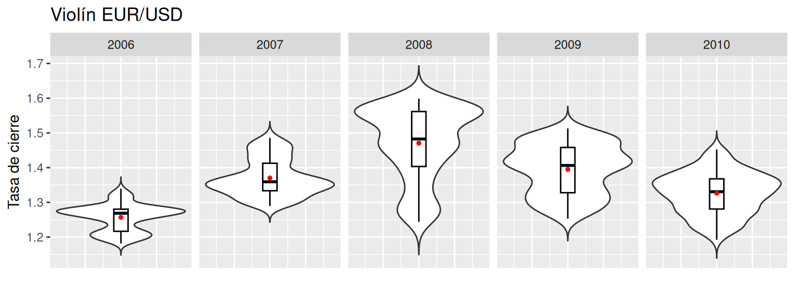
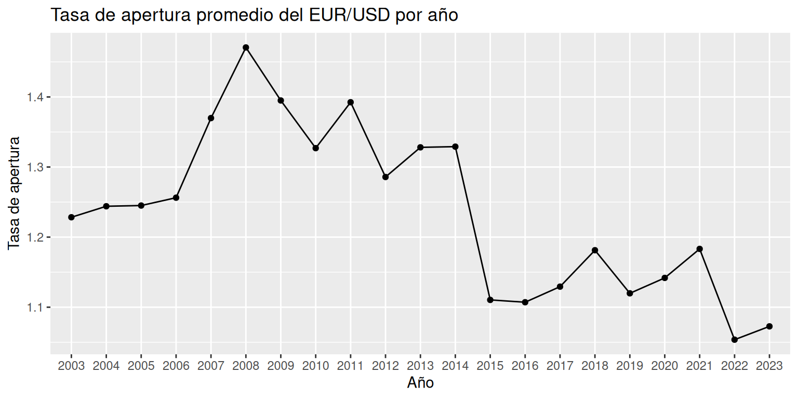

Unidad 1 Tópicos básicos de estadística
Las bases de datos que se trabajarán en esta unidad son las siguientes:
Tasa Euro/Dólar: Contiene el registro diario histórico de la tasa de cambio del Euro a Dólar durante el 2023. Las columnas de la base de datos son las siguientes:
- Date: Fecha de medición (yyyy-mm-dd), desde enero del 2003 hasta enero del 2023.
- Open: tasa de apertura.
- High: tasa más alta alcanzada en el día.
- Low: tasa más baja alcanzada en el día.
- Close: tasa de cierre del día.
- Adj Close: tasa de cierre ajustada del día (precio de cierre sin dividendos).
El código para cargar la base de datos en R es:
Precios de electricidad: Un conjunto de datos históricos que contiene el precio por hora de la electricidad para Bélgica. Las columnas de la base de datos son las siguientes:
- MTU: Hora de inicio (formato fecha y hora) del coste de la electricidad.
- EUR_MWh: Precio por hora (Euros por MWh).
El código para cargar la base de datos en R es:
Pacientes: Contiene datos respecto a los ataques al corazón de distintos pacientes hospitalarios. El detalle de algunas de las columnas de la base de datos que utilizaremos son las siguientes:
- age: edad del paciente (en años).
- sex: sexo del paciente (Hombre: 1 y Mujer: 0).
- cp: Tipo de dolor en el pecho, Valor 1: angina típica, Valor 2: angina atípica, Valor 3: dolor no anginoso, Valor 4: asintomático.
- trtbps: presión arterial en reposo (en mm Hg).
- chol: nivel de colestorol (en mg/dl).
- fbs: azúcar en sangre en ayunas \(>\) 120 mg/dl (V = 1; F = 0).
- thalachh: frecuencia cardíaca máxima alcanzada (en latidos por minuto).
- oldpeak: tiempo de duración del último ataque al corazón (en minutos).
El código para cargar la base de datos en R es:
1.1 Conceptos
En esta sección se recordarán algunos conceptos claves de la estadística que están asociados a las ciencias cognitivas. Luego, se ahondará en las técnicas básicas de visualización para el estudio de estos.
1.1.1 Datos
El dato es la unidad básica de la estadística, el cual, corresponde a cualquier evento o hecho que no ha sido dotado de significado, es decir, un hecho del cual no se puede dar interpretación alguna (Brachman & Levesque, 2004).
Un ejemplo de este concepto, es cuando tratamos de responder la pregunta ¿por qué al caminar nos detenemos al encontrarnos con un semáforo en rojo? ¿Cuál es el dato? ¿Cuál es el significado?
1.1.2 Información
Por otro lado, los datos existen independiente de quien observa, y cuando una persona adquiere datos y los dota de significado, estos se convierten en información (Brachman & Levesque, 2004). Otra forma de entenderlo es:
En el ejemplo anterior, el decodificador es la persona que va caminando, y el significado (reglas para decodificar) que le damos al semáforo al estar en rojo viene de las reglas sociales que indican como actuar en determinadas situaciones.
En estadística, mediante el uso de distintas herramientas (gráficos, tablas, entre otras), dotaremos de significado a los datos, para así generar información de utilidad en distintos fenómenos de estudio.
1.1.3 Tipos de variables
El concepto de datos está fuertemente ligado a su naturaleza, es decir, el contexto de estudio que los rodea. En este sentido, los datos están asociados a lo que llamamos variable (“naturaleza del dato”, “los tipos de valores que adquiere el dato”), las cuales, se pueden clasificar la siguiente manera (Anderson et al., 2008, página 7):
- Cualitativas (Nominales y Ordinales): variables no numéricas que pueden o no llevar un orden, respectivamente.
- Cuantitativas (Discretas y Continuas): variables numéricas que pueden o no ser enumeradas, respectivamente.
Ejercicio 1.1 Determinar la clasificación de las siguientes variables: tiempo, dinero, altura, cantidad de vecinos en el lugar donde vivo, grado de conformidad (conforme, medianamente conforme, nada conforme) respecto a un servicio, color de pelo de un grupo de personas.
1.1.4 Población y Muestra
En investigación la recolección de datos constituye una de las tareas iniciales antes de aplicar cualquier tipo de técnica de análisis. La disciplina de estadística proporciona métodos para organizar y resumir datos y de sacar conclusiones basadas en la información obtenida.
Una investigación típicamente se enfocará en una colección bien definida de objetos que constituyen una población de interés. Cuando la información deseada está disponible para todos lo objetos de la población, se tienen lo que se llama un censo. Las restricciones de tiempo, dinero y otros recursos escasos casi siempre hacen que un censo sea infactible. En su lugar, se selecciona un subconjunto de la población, una muestra, de manera prescrita (Devore, 2008, página 2).
- Población: La población es el conjunto de todos los sujetos de interés en un estudio.
- Muestra: La muestra es un subconjunto de la población a través de los cuales el estudio recoge los datos.
Ejercicio 1.2 Determine la población y muestra de los siguientes enunciados.
- Se realiza un sondeo para determinar los rubros con mayor inflación de venta de mercado en Santiago, para ello se estudia el rubro con mayor ingreso líquido de ventas, en algunas de las comunas de Santiago.
- La encuesta ENUSC elabora anualmente un informe respecto a la seguridad ciudadana, para ello, se contacta a una cantidad de personas determinadas de cada región del país, dando así, resultados a nivel nacional y regional.
1.1.5 Parámetros y Estadísticos
Ambos conceptos están ligados a los de población y muestra de la siguiente manera (Anderson et al., 2008, página 83):
- Parámetros: corresponde a una característica de resumen de la población.
- Estadísticos: corresponde a una característica de resumen de la muestra.
En la figura 1.1 se observa un ejemplo de círculos rojos y azules tanto para la población como para una muestra de esta. Dado que la población contiene todos los datos (censo), es posible apreciar todos los círculos con sus colores. Por otro lado, la muestra es solo una pequeña parte de la población, es decir, seleccionan algunos de los círculos al “azar” con sus respectivos colores.
Un ejemplo de los conceptos explicados es la proporción de círculos rojos. En caso de que estuviésemos interesados en dicha característica en la población, se hablaría de un parámetro, mientras que, si se está interesado en la muestra se hablaría de estadístico.
Figura 1.1: Parámetro y estadístico
1.1.6 Estimador y Estimación
Una extensión de los conceptos de parámetro y estadístico, son los de estimador y estimación, para los cuales, se hace la siguiente distinción:
Estimador: Un estimador es un estadístico usado para aproximar (incertidumbre) el valor de un parámetro. Usualmente no cambia la técnica entre la población y la muestra, por ejemplo, si deseo aproximar la proporción de bolitas rojas en la población, se usaría la proporción de bolitas rojas en la muestra.
Estimación: Una estimación es el número que resulta de aplicar el estimador a una muestra particular. Esto difiera levemente de la definición anterior, ya que en términos estrictos, el estimador solo es la “fórmula”, y la estimación es el valor resultante al aplicar la fórmula. Sin embargo, hoy en día es muy común encontrar textos en donde el estimador se considera tanto para la fórmula como para el valor obtenido.
Si consideramos un ejemplo similar al anterior (Figura 1.2), y establecemos que el parámetro a estudiar es la proporción de círculos rojos, es natural pensar que en la muestra (estadístico) el comportamiento debería ser similar. La intención de decir “usaremos la proporción de círculos rojos en la muestra para deducir como es la proporción de círculos rojos en la población” corresponde al estimador (otro tema es argumentar si esto es correcto o no), mientras que, el cálculo del estimador (cálculo de la proporción de círculos rojos en la muestra) lleva el nombre de estimación.
Respecto a lo anterior:
- ¿Cuál sería la estimación de los círculos rojos?
- Si observamos la muestra de la figura 1.1 y 1.2, ¿cuándo diríamos que una estimación es buena?
Figura 1.2: Estimador y estimación
Ejemplo 1.1 Suponga que está interesado en estudiar el promedio anual del porcentaje de desempleo en Chile en el periodo 2010-2065. Para aproximar este valor, se hará uso de los registros anuales de desempleo de los últimos 16 años, para luego calcular el promedio muestral. La fórmula para calcular el promedio muestral en este caso, es el cuociente entre la diferencia entre el valor máximo y mínimo y, el logaritmo natural de la suma de los registros, dando como resultado un valor de 15%. A continuación, determine la población, muestra, parámetro, estadístico, estimador y estimación.
Población: Todos los registros anuales de desempleo en Chile entre 2010 y 2065.
Muestra: Los últimos 16 registros anuales de desempleo en Chile.
Parámetro: El promedio anual del porcentaje de desempleo en Chile entre 2010 y 2065.
Estadístico: El promedio anual del porcentaje de los últimos 16 registros de desempleo en Chile.
Estimador: Sean \(V_i\) con \(i=1,\ldots,16\) los últimos 16 registros anuales de desempleo en Chile. Luego el estimador es el siguiente:
\[ \frac{\max(V_i) - \min(V_i)}{\ln\left(\displaystyle\sum_{i=1}^{16} V_i\right)} \]
Estimación: El valor de 15% obtenido al aplicar el estimador a la muestra.
Algunas consideraciones importantes son:
- El estadístico siempre es la misma característica de la población pero aplicada a la muestra. Sin embargo, puede cambiar la fórmula matemática (estimador) que se utiliza para poder ser calculada (en la muestra). Esto cobra más sentido cuando la característica que se estudia es más compleja, por ejemplo, crecimiento económico, ya que no tiene una forma estándar de ser calculada (depende de las condiciones de la problemática).
- El estimador siempre es la fórmula matemática que se debe ser aplicada para poder cuantificar el estadístico.
Ejercicio 1.3 Para los siguientes enunciados determine: población, muestra, parámetro, estadístico, estimador y estimación.
Suponga que esté interesado en determinar el promedio anual de la esperanza de vida de los hombres en el periodo 20025-2027, sin embargo no cuenta con todos los datos. Para aproximar este valor, se hará uso de los registros anuales de esperanza de vida de los hombres en Chile entre 2010 y 2017, para luego calcular el promedio muestral. La fórmula para poder determinar el promedio muestral es obtener el cuociente entre el promedio aritmético de los datos, y la raíz cuadrada de la suma de los datos, dado como resultado 79.12 años
Suponga que está interesado en estudiar el promedio histórico del monto de las deudas comerciales (considere la deuda comercial como la suma de la deuda comercial de hombres y mujeres), para ello, usted aproxima este valor mediante el uso de los registros anuales de deuda comercial de hombres y mujeres entre 2010 y 2022, para luego calcular el promedio muestral. La fórmula para calcular el promedio muestral en este caso, es el cuociente entre la diferencia entre la suma de los valores cúbicos de los registros y, el logaritmo natural de la suma de los registros al cuadrado, dando como resultado un valor de 15.12 billones de pesos.
Desea determinar la mediana histórica de la edad de los distintas especies de árbol que habitan la región de la Araucanía, para ello, usted aproxima este valor mediante el uso de los registros de edad de los árboles en la región entre 2010 y 2022, para luego calcular la mediana muestral, haciendo uso de la mediana Hodges-Lehmann. La fórmula para calcular dicha medida, es el promedio de todas las medianas de pares de observaciones. El resultado final es un valor de 76.4 años.
1.1.7 Variabilidad muestral
Efectivamente, la estimación de un parámetro está determinada por la muestra con la que se trabaja. La forma en la que se elige una muestra es azarosa (que no se puede intencionar en su totalidad), por lo que es imposible saber de antemano si la estimación será buena o mala respecto al parámetro (error de estimación). En estadística, la forma en la que se elige o genera una muestra puede llegar a ser muy compleja, siendo un tema que está fuera del alcance de este curso.
El concepto detrás de esto es la variabilidad muestral, el cual, indica que dependiendo de la muestra que se obtenga de la población, esta se comportará distinto en relación al estadístico (igualmente para el valor del estimador: estimación). Para ilustrar esto, observemos la figura 1.3.
Figura 1.3: Población
Luego,

Figura 1.4: Muestra 1

Figura 1.5: Muestra 2
Efectivamente, diferentes muestras se comportan de manera diferente, es decir, la estimación depende de la selección de la muestra. Esto se denomina como variabilidad muestral.
1.1.8 Representatividad y sesgo de la muestra
Representatividad
Comúnmente se escucha hablar de que una muestra debe ser representativa respecto de la población, algo muy similar a lo presentado en la sección 1.1.7. Sin embargo, este concepto no tiene sustento matemático, ya que, para poder verificar que una muestra es representativa se debe conocer a toda la población (la característica de estudio), lo cual en la práctica no ocurre. Y en caso de que se conociesen todos los datos de la población, sería absurdo calcular la estimación de un parámetro, ya que podría calcularse directamente el valor del parámetro en cuestión.
Sesgo
Hay personas utilizan la siguiente frase “la muestra está sesgada”, lo cual es incorrecto en su totalidad en estadística. El concepto de sesgo no es únicamente propio de la estadística, sin embargo, en esta área, corresponde a una propiedad de los estimadores. Se dice que un estimador es insesgado cuando el valor esperado de este es igual al parámetro. Y al igual que el concepto anterior, no es posible verificarlo en la práctica, aunque si tiene un sustento matemático por detrás.
1.2 Medidas de localización
Los resúmenes visuales de datos son herramientas excelentes para obtener impresiones y percepciones preliminares. Un análisis de datos más formal a menudo requiere el cálculo e interpretación de medidas de resumen numéricas. Es decir, de los datos se trata de extraer varios números resumidos, números que podrían servir para caracterizar el conjunto de datos. Las tres medidas de resumen más utilizadas son la media, la mediana y la moda.
1.2.1 Media
Para un conjunto dado de números \(x_1, x_2, x_3, \ldots, x_n\), la medida más conocida y útil es la media o promedio aritmético. Usualmente se asume que los números \(x_i\) hace parte de una muestra, por lo que a este promedio se le connota como media muestral y se denota con por \(\bar{x}\).
De lo anterior, la media muestral (\(\bar{x}\)) de una conjunto de datos \(x_1, x_2, x_3, \ldots, x_n\) está dada por (Devore, 2008, página 25)
\[\begin{equation} \bar{x} = \frac{x_1 + x_2 + \cdots + x_n}{n} = \frac{\displaystyle\sum_{i=1}^{n}x_i}{n} \tag{1.1} \end{equation}\]En R, para obtener el promedio aritmético de los datos se hace uso de la función mean(). A continuación, un ejemplo.
## [1] 0.2727273El promedio (\(\bar{x}\)) representa el valor central de las observaciones incluidas en una muestra. Sin embargo, esta medida puede llegar a ser inapropiada en algunas circunstancias, específicamente cuando existen valores extremos. Un ejemplo de esto, es el promedio de los ingresos (el caso de Chile), ya que, es común que unos cuantos afortunados ganen cantidades astronómicas, por lo que el uso del ingreso promedio como medida de resumen puede ser engañoso (otro ejemplo, es la valorización de BitCoin al dólar estadounidense).
A pesar de lo anterior, esta medida sigue siendo ampliamente utilizada, en gran medida porque existen muchas poblaciones para las cuales un valor extremo en la muestra sería altamente improbable (ejemplo: tipo de cambio del dólar y el euro).
Ejercicio 1.4 Respecto a la base Tasa Euro/Dólar, utilice el comando colMeans() para obtener la media de todas las variables asociadas a la tasa de conversión (ignore la columna asociada a la variable fecha). Interprete.
Ejercicio 1.5 Obtenga de la media del precio por hora de la electricidad, en la base Precios de electricidad. Utilice el comando na.omit() para no considerar los valores faltantes. Interprete.
Ejercicio 1.6 Considerando la base de datos Pacientes, determine la media del nivel de colesterol por sexo. Interprete.
1.2.2 Mediana
La palabra mediana es sinónimo de “medio” y la mediana muestral es en realidad el valor medio una vez que se ordenan las observaciones de la más pequeña a la más grande (Devore, 2008, página 26).
La mediana muestral se obtiene ordenando primero las observaciones de la más pequeña a la más grande. Por lo tanto,
- Si la cantidad de datos es impar, entonces, la mediana es igual al número en la posición \(\frac{n+1}{2}\).
- Si la cantidad de datos es par, entonces, la mediana es el promedio entre los números ubicados en las posiciones \(\frac{n}{2}\) y \((\frac{n}{2}+1)\).
Para poder calcular la mediana en R, se debe hacer uso del comando median(), tal como se muestra a continuación.
# Conjunto de datos (cantidad impar)
x = c(1,2,3,4,5,6,7,-3,-1,-2,5.4,9.3,0)
# Mediana del conjunto de datos
median(x)## [1] 3# Conjunto de datos (cantidad par)
x = c(1,2,3,4,5,6,7,-3,-1,-2,5.4,9.3)
# Mediana del conjunto de datos
median(x)## [1] 3.5En ambos casos, se entiende que, ordenando los datos de menor a mayor (en una recta real), tanto a la derecha como izquierda de la mediana se encuentra la misma cantidad de datos.
Ejercicio 1.7 Obtenga la mediana de las distintas variables (cuando corresponda) de la base de datos Pacientes. Interprete.
1.2.3 Moda
La moda es la medida más intuitiva de las tres, ya que simplemente corresponde al valor que se presenta con mayor frecuencia (Anderson et al., 2008, página 85). Para ilustrar esto, veamos el siguiente código en R:
# El siguiente vector contiene la información de la cantidad
# de hermanos de un determinado grupo de personas
hermanos = c(1,2,3,1,2,3,3,3,4,1,7,1,0,0,1,0,2)
# Utilizando el comando table podemos obtener la frecuencia de
# cada una de las distintas observaciones
table(hermanos)## hermanos
## 0 1 2 3 4 7
## 3 5 3 4 1 1Como resultado se aprecia que la cantidad de hermanos que más se repita dentro del grupo de personas es de 5.
Ejemplo 1.2
Cree un objeto que guarde la tabla de frecuencias de la variable Open de la base de datos Tasa Euro/Dólar (sin imprimir la tabla).
Ya que es imposible buscar manualmente la frecuencia más alta, utilice el comando
which.max()para encontrar la posición en la que se ubica esta, ingresando como argumento la tabla anteriormente guardada. Guarde este valor en un objeto.## 1.336005 ## 3067Finalmente, consulte de manera directa en la tabla en valor de la frecuencia en la posición calculada en el paso anterior. Interprete.
## 1.336005 ## 6Esto quiere decir, que el valor de apertura de la tasa EUR/USD que más se repite históricamente es 1.336005 con una frecuencia de 6.
Nota: En caso de que existan dos o más valores con las frecuencias más altas, el programa solo reporta la primera, según el orden lexicográfico de las columnas.
Ejercicio 1.8 Considerando la base de datos Pacientes, determine la moda de las variables cualitativas. Interprete.
Nota: En el documento se usará simplemente el nombre de la medida de localización (media, moda, mediana) para referirse a la medida de localización muestral. En casos determinados se hará la distinción entre el caso muestral y poblacional, según corresponda (ejemplo: media poblacional, media muestral).
1.3 Medidas de escala
Al momento de reportar la media solo se obtiene información parcial sobre el un conjunto de datos. Diferentes muestras o poblaciones pueden tener medidas idénticas de localización y aún diferir entre sí en otras importantes maneras. La tabla 1.1 muestra las notas obtenidas por los alumnos de 2 dos cursos con la misma media, aunque el grado de dispersión (variabilidad) en torno a esta es diferente para ambas muestras, es decir, en el Curso 1 las se observan notas más bajas y altas que el Curso 2.
| Curso 1 | Curso 2 | Curso 3 |
|---|---|---|
| 3.0 | 4.0 | 3.0 |
| 4.5 | 5.0 | 7.0 |
| 5.0 | 6.0 | – |
| 5.5 | – | – |
| 7.0 | – | – |
1.3.1 Rango
La medida más simple de variabilidad en una muestra es el rango, el cual es la diferencia entre los valores muestrales más grande y más pequeño (Devore, 2008, página 32). El rango de las notas del curso 1 en la tabla 1.1 es más grande que el del curso 2, lo que refleja más variabilidad en la primer muestra que en la segunda. Un defecto del rango, no obstante, es que depende de solo las dos observaciones más extremas y hace caso omiso de las posiciones de los valores restantes. Los cursos 1 y 3 tienen rangos idénticos, aunque cuando se toman en cuenta las observaciones entre los dos extremos, existe mucho menos variabilidad o dispersión en la tercera muestra que en la primera.
Ejemplo 1.3 Obtener el rango de la tasa de apertura histórica del EUR/USD de la base de datos Tasa Euro/Dólar.
# Utilizando el comando range() se obtienen los valores mínimo y máximo
# de la variable en cuestión
(rango = range(datos$Open))## [1] 0.959619 1.598184## [1] 0.638565El valor máximo siempre estará en la segunda posición y le mínimo en la segunda.
Ejercicio 1.9 Utilizando la base de datos Pacientes, determine el rango de las variables cuantitativas. Interprete.
Ejercicio 1.10 Determine el rango de la fechas de medición en los precios de electricidad en la base Precios de electricidad. Interprete.
1.3.2 Varianza y desviación estándar
Las medidas principales de variabilidad implican las desviaciones de la media,
\[\begin{equation} x_1 - \bar{x}, x_2 - \bar{x}, x_3 - \bar{x}, \ldots, x_n - \bar{x}. \tag{1.2} \end{equation}\]Es decir, las desviaciones de la media se obtienen restando \(\bar{x}\) de cada una de las \(n\) observaciones muestrales. Una desviación será positiva si la observación es más grande que la media (a la derecha de la media sobre la recta real) y negativa si la observación es más pequeña que la media (a la izquierda de la media sobre la recta real). Si todas las desviaciones son pequeñas en magnitud, entonces todos los valores de la muestra son cercanos a la media y hay poca variabilidad. Alternativamente, si algunas de las desviaciones son grandes de magnitud, entonces algunos de los de los valores de la muestra están lejos de la media (sobre la recta real) lo que sugiere una mayor variabilidad.
Una forma de resumir las desviaciones sería sumando todas ellas. Sin embargo, es una mala idea, ya que la suma siempre es igual a cero (1.3), ¿alguna idea del por qué?
\[\begin{equation} \text{Suma de las desviaciones en una muestra} = \sum_{i=1}^{n}(x_i-\bar{x}) = 0 \tag{1.3} \end{equation}\]En este sentido, para poder resumir las desviaciones de una muestra evitando el problema mencionado, se elaboran dos expresiones (Devore, 2008, página 32):
- Varianza (muestral):
- Desviación estándar (muestral):
Las unidades correspondientes a la varianza suele causar confusión. Como los valores que se suman para calcular la varianza, \((x_i-\bar{x})^2\), están elevados al cuadrado, las unidades correspondientes a la varianza muestral también están elevadas al cuadrado. Las unidades al cuadrado de la varianza dificulta la compresión e interpretación intuitiva de los valores numéricos de la varianzas. Lo recomendable es entender la varianza como una medida útil para comparar la variabilidad de dos o más variables. Al comparar variables, la que tiene la varianza mayor, muestra más variabilidad. Otra interpretación del valor de la varianza suele ser innecesaria (Anderson et al., 2008, página 94).
La desviación estándar es la raíz cuadrada de la varianza, pero, ¿qué se gana con esto? Al calcular la desviación estándar, las unidades de esta son iguales a de la variable original, por lo que es más fácil de interpretar. Sin embargo, estas dos medidas tiene ciertas limitantes a la hora de comprar la variabilidad de dos variables:
- Es ideal que ambas variable tengan la misma media.
- Las variables deben tener la misma unidad de medida.
No seguir estas recomendaciones puede generar un falsa sensación en la comunicación de resultados.
Ejemplo 1.4 Compare la variabilidad entre la tasa de apertura y la tasa de cierre histórica del EUR/USD presentes en la base de datos Tasa Euro/Dólar, para ello:
Verifique la media de ambas variables la misma
## [1] 1.244338## [1] 1.244363Las tasas son similares hasta el tercer decimal, se asumirá que las medias son iguales
Ya que tienen la misma unidad de medida, calcule la varianza y desviación estándar de cada una. Interprete.
Al calcular la varianza muestral, se observa que la tasa de cierre es levemente menor variabilidad que la tasa de apertura. Similarmente, se observa que la tasa de cierre tiene menor variabilidad que la tasa de apertura.
## [1] 0.01562596 0.01562404## [1] 0.1250038 0.1249962¿Por qué es más clara la interpretación (primer decimal distinto) al utilizar la desviación estándar?
Ejercicio 1.11 Utilice la varianza directamente para comparar la variabilidad de la variables chol, age, trtbps y oldpeak entre hombres y mujeres, en la base Pacientes. Interprete.
Ejercicio 1.12 Utilice la varianza directamente para comprar la variabilidad de los precios de la electricidad entre las primeras y últimas 1000 mediciones, en la base Precios. Interprete.
1.3.3 Coeficiente de variación
Para subsanar el problema de las limitaciones de la varianza y desviación estándar, se encuentra la medida llamada coeficiente de variación (1.6).
\[\begin{equation} CV = \left(\frac{S}{|\bar{x}|}\right)\cdot 100\% \tag{1.6} \end{equation}\]Cuando el valor del coeficiente de variación es cercano a 100% se habla de mayor dispersión (heterogéneo), mientras que un valor cercano a 0% indica menor dispersión (homogéneo), además, se debe considerar que el porcentaje calculado corresponde a la variabilidad respecto a la media de los datos. Sin embargo, no es recomendable usar esta medida cuando el valor de la media es cercano a cero, ya que el CV pierde su significado al tomar valores muy grandes, lo que daría una falsa sensación de dispersión de los datos (Anderson et al., 2008, página 95).
Ejemplo 1.5 En el ejemplo 1.4, se utilizó la varianza para comprar directamente la variabilidad entre la tasa de apertura y la tasa más alta histórica del EUR/USD. Sin embargo, si calculamos las medias de ambas variables se puede verificar que son distintas. Utilice el CV para comprar la variabilidad de ambas variables.
Claramente la media de la tasa más alta es mayor a la media de la tasa de apertura.
## [1] 1.244338 1.249022Al verificarse una de las dos limitantes mencionadas, procedemos a calcular el CV de ambas variables.
CV_Open = sd(datos$Open)/abs(mean(datos$Open))*100
CV_High = sd(datos$High)/abs(mean(datos$High))*100
c(CV_Open, CV_High)## [1] 10.04581 10.06323Se puede observar que el coeficiente de variabilidad de la tasa más alta (10.06%) es mayor a la de la tasa de apertura (10.04%). Por lo tanto, la variabilidad (dispersión) de los datos es más homogénea para la tasa de apertura. Sin embargo, la diferencia es muy pequeña, por lo que la dispersión en relación a la media es similar entre ambas variables.
Ejercicio 1.13 Compare la variabilidad de la presión arterial en reposo y el nivel de colesterol de los pacientes registrados en la base de datos Pacientes. Repita el estudio diferenciado por sexo. Interprete.
Ejercicio 1.14 Utilizando la base de datos Pacientes, compare la variabilidad de la edad de los paciente, según el tipo de dolor de pecho que presentan. Interprete.
Nota: en el documento se usará simplemente el nombre de la medida de escala (rango, varianza, desviación estándar y CV) para referirse a la medida de escala muestral. En casos determinados se hará la distinción entre el caso muestral y poblacional, según corresponda (ejemplo: varianza poblacional, varianza muestral).
1.4 Notación poblacional y muestral
| Poblacional | Muestral | |
|---|---|---|
| Media | \(\mu\) | \(\bar{x}\) |
| Varianza | \(\sigma^2\) | \(S^2\) |
| Desviación estándar | \(\sigma\) | \(S\) |
1.5 Gráficos descriptivos
En este apartado, se considera la representación de un conjunto de datos por medio de técnicas visuales. A continuación, se hará mención de algunas de las técnicas más útiles y pertinentes a la estadística de descriptiva. Los ejemplos presentados en esta sección hacen uso de la base de datos de la unidad (sección 1).
1.5.1 Histograma
Algunos datos numéricos se obtienen contando para determinar el valor de una variable (cuántas veces se repite un hecho), mientras que otro datos se obtienen tomando mediciones (peso, altura, tiempo de reacción). Usualmente, este tipo de gráfico se utiliza con datos continuos (aunque tiene una versión para datos discretos), para lo cual, se debe hacer lo siguiente (Devore, 2008, página 12):
- Subdividir los datos en intervalos de clase o clases, de tal manera que cada observación quede contenida en exactamente una clase. Para esto, se hace uso de la regla de Sturges (1926), la cual, consiste en calcular la expresión \(1+\log_2(n)\), aproximando hacia el entero más próximo, dónde \(n\) corresponde a la cantidad de datos (existen otra variedad de técnicas).
- Determinar la frecuencia y la frecuencia relativa de cada clase, es decir, cuántas observaciones hay en cada uno de los intervalos.
- Se marcan los límite de clase sobre el eje horizontal del plano cartesiano.
- Se traza un rectángulo cuya altura es la frecuencia absoluta (o relativa) correspondiente a cada intervalo de clase.
Para generar un histograma en R a partir de un conjunto de datos, se utiliza el siguiente código (se toma como ejemplo la base de datos Tasa Euro/Dólar):
library(ggplot2) # Librería de ggplot2
ggplot( # Ambiente gráfico
data = datos, # Base de datos a utilizar
aes( # Comandos estéticos
x = Close)) + # Eje X y variable asociada
geom_histogram( # Objeto a graficar: histograma
bins = round(1 + log2(dim(datos)[1])), # Cantidad de intervalos del histograma: regla de Sturges
color = "black", # Color del borde de las barras del histograma
fill = "white", # Color de relleno de las barras
closed = "left") + # Tipo de intervalo del histograma
labs( # Títulos
title = "Histograma EUR/USD", # Título del gráfico
x = "Tasa de cierre", # Título del eje X
y = "Frecuencia") # Título del eje YPara interpretar un histograma, basta con indicar los siguientes aspectos:
- Forma visual de la distribución de las barras (en general).
- Mencionar si existe una concentración fuera del comportamiento general, y en dónde se encuentra.
En el caso del histograma de la tasa de cierre del EUR/USD, se observa una forma de campana centrada cerca del 1.3, además, se evidencia la presencia de una frecuencia superior al resto que se encuentra la izquierda del gráfico cerca del 1.1.
Cabe mencionar, que existen otros aspectos que son posibles mencionar, para ello consulte la bibliografía del curso.
Es útil recordar que el histograma está asociado a una tabla de frecuencia por intervalos. Para obtener la tabla asociada a un histograma se puede utilizar el siguiente código.
# Datos del histograma guardados
h = hist(datos$Close, # Datos a graficar en el histograma
breaks = 13, # Cantidad de intervalos: regla de Sturges
right = F, # Cerrado por la izquierda
plot = F) # No desplegar el gráfico en consola
library(agricolae) # Librería para generar la tabla de frecuencias
print(table.freq(h)) # Imprime en consola la tabla de frecuencias## Lower Upper Main Frequency Percentage CF CPF
## 1 0.95 1.00 0.975 46 0.9 46 0.9
## 2 1.00 1.05 1.025 89 1.8 135 2.7
## 3 1.05 1.10 1.075 444 8.9 579 11.7
## 4 1.10 1.15 1.125 839 16.9 1418 28.6
## 5 1.15 1.20 1.175 591 11.9 2009 40.5
## 6 1.20 1.25 1.225 634 12.8 2643 53.2
## 7 1.25 1.30 1.275 614 12.4 3257 65.6
## 8 1.30 1.35 1.325 654 13.2 3911 78.8
## 9 1.35 1.40 1.375 510 10.3 4421 89.0
## 10 1.40 1.45 1.425 257 5.2 4678 94.2
## 11 1.45 1.50 1.475 166 3.3 4844 97.5
## 12 1.50 1.55 1.525 38 0.8 4882 98.3
## 13 1.55 1.60 1.575 84 1.7 4966 100.0Ejercicio 1.15 Utilizando la base de datos de Precios de electricidad, elabore un histograma de los precios de la electricidad. Interprete.
1.5.2 Gráfico de Caja
El gráfico de caja se utiliza para describir las siguiente características de un conjunto de datos (Devore, 2008, página 35):
- El centro.
- La dispersión.
- El grado y naturaleza de cualquier alejamiento de la simetría.
- La identificación de las observaciones “extremas” (atípicas) inusualmente alejadas del cuerpo principal de los datos.
Los pasos para elaborar un gráfico de caja son los siguiente (Anderson et al., 2008, página 106):
- Se dibuja una caja cuyos extremos se localicen en primer y tercer cuartiles. Esta caja contiene 50% de los datos centrales.
- En el punto donde se localiza la mediana se traza una linea horizontal.
- Usando el rango intercuartílico (\(RIC = Q_3-Q_1\)), se localizan los límites. En un gráfico de caja los límites se encuentra a \(1.5RIC\) abajo y arriba de \(Q_1\) y \(Q_3\) respectivamente. Los datos que quedan fuera de estos límites se consideran observaciones atípicas (Tukey, 1977). La razón por la cual se considera 1.5 veces el rango intercuartílico es convencional, no obstante, hay argumento relacionados a la cantidad de datos dentro de los limites inferior y superior, los cuales indican que debe ser de 99.7% (James et al., 2013).
- Las lineas que se extienden verticalmente desde la caja se les llama bigotes. Los bigotes van desde los extremos de la caja hasta los valores menor y mayor de los límites calculados en el paso 3.
- Mediante puntos se indica la localización de las observaciones atípicas.
Para generar un gráfico de caja en R a partir de un conjunto de datos, se utiliza el siguiente código (se toma como ejemplo la base de datos Tasa Euro/Dólar):
g = ggplot( # Ambiente gráfico
data = datos, # Base de datos a utilizar
aes( # Comandos estéticos
y = Close)) + # Eje Y y variable asociada
geom_boxplot( # Objeto a graficar: gráfico de caja
color = "black", # Color del borde del gráfico
fill = "white") + # Color de relleno del gráfico
labs( # Títulos
title = "Caja EUR/USD (opción 1)", # Título del gráfico
x = "", # Título del eje X
y = "Tasa de cierre") + # Título del eje Y
theme( # Aspectos visuales del gráfico
axis.ticks.x = element_blank(), # Elimina las regletas del eje X
axis.text.x = element_blank()) # Elimina los números del eje X
info = unlist(ggplot_build(g)[[1]]) # Guardamos los valores del gráfico
values = round(as.numeric(info[1:5]), 3) # Extraemos los valores de construcción
g1 = g + # Creamos un nuevo gráfico a partir del anterior
scale_y_continuous( # Modificar el eje Y
breaks = values, # Modificamos los puntos a considerar en el eje Y
labels = values) + # Modificamos los valores mostrados en el eje Y
labs( # Títulos
title = "Caja EUR/USD (opción 2)") # Título del gráfico
library(gridExtra) # Librería para juntar gráficos de ggplot2
grid.arrange(g, # Gráfico
g1, # Gráfico
ncol = 2) # Despliegue en a dos columnas Para interpretar un gráfico de caja es recomendable utilizar la opción 2 mostrada anteriormente, ya que, se debe mencionar uno de los puntos relevantes del gráfico. En el ejemplo recién dado, se observa que, el primer, segundo y tercer cuartil están en 1.135, 1.233 y 1.335 respectivamente, mientras que el valor mínimo y máximo están en 0.96 y 1.559 respectivamente. Adicionalmente, se puede mencionar que los datos superiores en comparación a los inferiores, se encuentran más alejados de la mediana.
Ejercicio 1.16 Utilizando la base de datos de Precios de electricidad, elabore un gráfico de caja de los precios de la electricidad. Interprete.
1.5.3 Gráfico de Violín
El gráfico de violín proporciona una representación más completa y precisa de la distribución de los datos que las técnicas anteriores, ya que muestra tanto la forma de la distribución como su concentración (Hintze & Nelson, 1998). La utilidad de este gráfico recae en la comparación de la distribución de los datos entre distintos grupos y/o categorías.
El proceso de construcción del gráfico es el siguiente:
- Dibujo de la traza de densidad: la traza de densidad se dibuja sobre el eje vertical en el gráfico de violín (“forma suavizada del histograma”).
- Creación de la sección central simétrica: se crea una sección central simétrica que representa la mitad de la traza de densidad.
Adicionalmente, es común agregar un gráfico de caja junto al de violín con el fin de incorporar la visualización de las medidas de posición.
Para generar un gráfico de violín en R a partir de un conjunto de datos, se utiliza el siguiente código (se toma como ejemplo la base de datos Tasa Euro/Dólar):
# Se guarda el gráfico en una variable para posteriormente
# integrar otros gráficos dentro de este.
g = ggplot( # Ambiente gráfico
data = datos, # Base de datos a utilizar
aes( # Comandos estéticos
x = 1, # Se fija el valor horizontal del gráfico (a elección)
y = Close)) + # Eje Y y variable asociada
geom_violin( # Objeto a graficar: violín
trim = F, # Modifica las terminaciones visuales superior e inferior
fill = "white") + # Color de relleno del gráfico
labs( # Títulos
title = "Violín EUR/USD", # Título del gráfico
x = "", # Título del eje X
y = "Tasa de cierre") + # Título del eje Y
theme( # Aspectos visuales del gráfico
axis.ticks.x = element_blank(), # Elimina las regletas del eje X
axis.text.x = element_blank()) # Elimina los números del eje X
g # Desplegamos el gráfico en el visualizador# Agregamos otros elementos al gráfico guardado
g + geom_boxplot( # Objeto a graficar: gráfico de caja
width = 0.1, # Anchura proporcional del nuevo gráfico de caja
color = "black", # Color de borde del gráfico
fill = "white") + # Color de relleno del gráfico
stat_summary( # Función para agregar información de resumen
fun = mean, # Tipo de información: promedio
geom = "point", # Forma visual
size = 1, # Tamaño
color = "red", # Color
orientation = "x") # OrientaciónPara interpretar un gráfico de violín con caja y promedio se deben mencionar tres aspectos relevantes:
- Ubicación de la(s) mayor(es) concentración(es) de datos, utilizando como referencia los cuartiles.
- Ubicación del promedio respecto a la mediana.
- Posibles razones por las cuales se explica la ubicación anteriormente mencionada del promedio respecto a la mediana.
En el ejemplo anterior, la principal concentración se encuentra por debajo del primer cuartil, aunque destacan otras dos concentraciones que están por debajo del segundo cuartil y alrededor del tercer cuartil respectivamente. El promedio se encuentra sutilmente por encima de la mediana, esto se puede explicar debido a que los datos superiores del gráfico se encuentra más lejos de la mediana en comparación a los datos inferiores.
Ejercicio 1.17 Utilizando la base de datos de Precios de electricidad, elabore un gráfico de violín con caja y promedio de los precios de la electricidad. Interprete.
Ejemplo 1.6 El siguiente código, crea una nueva columna en la base de datos que identifica el año en el que se realizó la medición de las tasas. A continuación, elabore un gráfico de violín (más gráfico de caja y promedio) de la variable Close en el periodo de años 2006-2010, diferenciando por año.
# Extraemos el año de la variable Date, y la guardamos en un nueva columna
datos$Ano = substr(datos$Date, 1, 4)
ggplot( # Ambiente gráfico
data = datos[datos$Ano %in% 2006:2010,], # Base de datos a utilizar
aes( # Comandos estéticos
x = 1, # Se fija el valor horizontal del gráfico (a elección)
y = Close)) + # Eje Y y variable asociada
geom_violin( # Objeto a graficar: violín
trim = F, # Modifica las terminaciones visuales superior e inferior
fill = "white") + # Color de relleno del gráfico
geom_boxplot( # Objeto a graficar: gráfico de caja
width = 0.1, # Anchura proporcional del nuevo gráfico de caja
color = "black", # Color de borde del gráfico
fill = "white") + # Color de relleno del gráfico
stat_summary( # Función para agregar información de resumen
fun = mean, # Tipo de información: promedio
geom = "point", # Forma visual
size = 1, # Tamaño
color = "red") + # Color
labs( # Títulos
title = "Violín EUR/USD", # Título del gráfico
x = "", # Título del eje X
y = "Tasa de cierre") + # Título del eje Y
theme( # Aspectos visuales del gráfico
axis.ticks.x = element_blank(), # Elimina las regletas del eje X
axis.text.x = element_blank()) + # Elimina los números del eje X
facet_wrap( # Segregación del gráfico
vars(Ano), # Variable que se utiliza para segregar el gráfico
nrow = 1) # Disposición visual: una fila
Para interpretar este tipo de gráficos, se debe realizar un interpretación uno a uno, siguiendo la recomendación antes dada. También, es posible comprar los gráficos a través de la media y coeficiente de variabilidad. Para este ejemplo, queda como trabajo del estudiante realizar esta comparación.
Ejercicio 1.18 Utilizando la base de datos de Paciente Realice un gráfico de violín con caja y promedio del nivel de colesterol de los paciente, diferenciando por el nivel de azúcar en sangre en ayunas. Interprete.
Ejercicio 1.19 Agregue una diferenciación por sexo a lo realizado en el ejercicio 1.18. Entienda que para cada nivel de azúcar en sangre se debe ver un desglose por sexo. Interprete.
Ejercicio 1.20 Utilizando la base de datos de Precios de electricidad, realice un gráfico de violín con caja y promedio para el precio de la electricidad, diferenciado por año. Interprete.
1.5.4 Gráfico de Dispersión
El gráfico de dispersión es útil para estudiar la relación entre dos variables continuas. Muestra cómo varía un variable en función de la otra y puede ayudar a identificar patrones y tendencias (Rowlingson, 2016).
Los pasos para elaborar un gráfico de caja son los siguiente (Healy, 2019):
- Elegir dos variables continuas de la base de datos a trabajar. Cada fila corresponde a una observación, por lo cual, hay una correspondencia entre los valores de una misma fila.
- Elegir la variable estará en el eje X y Y.
- Representar cada par ordenado con un punto.
Para generar un gráfico de dispersión en R a partir de un conjunto de datos, se utiliza el siguiente código (se toma como ejemplo la base de datos Tasa Euro/Dólar):
ggplot( # Ambiente gráfico
data = datos, # Base de datos a utilizar
aes( # Comando estéticos
x = Open, # Eje X y variable asociada
y = Close)) + # Eje Y y variable asociada
geom_point( # Objeto a graficar: Gráfico de dispersión
color = "black", # Color
alpha = 0.3) + # Opacidad
labs( # Títulos
title = "Tasa de apertura y cierre del EUR/USD", # Título del gráfico
x = "Tasa de apertura", # Título del eje X
y = "Tasa de cierre") # Título del eje YTal como se menciona al inicio, la interpretación de este tipo de gráficos radica en describir la tendencia de los puntos. En el ejemplo anterior, el gráfico muestra una tendencia al alza, es decir, que cuando la tasa de apertura del EUR/USD aumenta, entonces, la tasa de cierre tiende a aumentar.
Ejercicio 1.21 Utilizando la base de datos Pacientes, realice un gráfico de dispersión entre la variable age (eje X) y la variable thalachh (eje Y). Interprete.
Ejemplo 1.7 En los siguiente gráficos se toma como ejemplo la base de datos Tasa Euro/Dólar.
Es posible utilizar el gráfico de dispersión con variables que en su naturaleza son discretas. En este sentido, elabore un gráfico de dispersión entre el año de medición y el valor promedio de tasa de apertura del EUR/USD (guarde el gráfico en una variable).
g = ggplot( # Ambiente gráfico data = datos, # Base de datos a utilizar aes( # Comando estéticos x = Ano, # Eje X y variable asociada y = Open, # Eje Y y variable asociada group = 1)) + # Comando únicamente necesario para la pregunta 2 geom_point( # Objeto a graficar stat = "summary", # Tipo de información a graficar: resumen fun = "mean") + # Tipo de resumen: promedio de la variable Y labs( # Títulos title = "Tasa de apertura promedio del EUR/USD por año", # Título del gráfico x = "Año", # Título del eje X y = "Tasa de apertura") # Título del eje Y g # Desplegamos el gráfico guardadoAñadir al gráfico un formato de líneas entre los puntos. Interprete.
g = g + # Añadimos otro gráfico geom_line( # Objeto a graficar: lineas stat = "summary", # Tipo de información a graficar: resumen fun = "mean") # Tipo de resumen: promedio de la variable Y g # Desplegamos el gráfico guardado
Hasta el 2008 la tasa promedio de apertura estuvo en alza, posteriormente, la tasa decayó a un valor inferior a 1.1.
Grafique el valor de la tasa de apertura del EUR/USD desde el 2020 hasta el 2022 separadamente. Interprete.
datos$Date = as.Date(datos$Date) # Fechas en formato fecha de R g = ggplot( # Ambiente gráfico data = datos[datos$Ano %in% 2020:2022,], # Datos de los años 2020 al 2022 aes( # Comando estéticos x = Date, # Comandos estéticos: Eje X y variable asociada y = Open)) + # Eje Y y variable asociada geom_point( # Objeto a graficar alpha = 0.5, # Opacidad size = 0.6) + # Tamaño theme( # Aspectos visuales del gráfico axis.text.x = element_blank()) + # Eliminamos el texto del eje X facet_wrap( # Segregación del gráfico vars(Ano), # Variable que se utiliza para segregar el gráfico nrow = 1, # Disposición visual: una fila scales = "free_x") + # La escala del eje X es independiente para gráfico labs( # Títulos title = "Tasa de apertura del EUR/USD desde el 2020 hasta el 2022", # Título del gráfico x = "Fecha", # Título del eje X y = "Tasa de apertura") # Título del eje Y g # Desplegamos el gráfico guardadoDurante los 3 años consecutivos, se observa que únicamente en el 2020 la tendencia de la tasa de apertura es al alza, mientra que para los otros dos años hubo un decaimiento en el valor de esta.
Grafique el valor de la tasa de apertura del EUR/USD diferenciando por año. Interprete.
g = ggplot( # Ambiente gráfico data = datos, # Base de datos a utilizar aes( # Comando estéticos x = Date, # Comandos estéticos: Eje X y variable asociada y = Open, # Eje Y y variable asociada color = Ano)) + # Color según el año geom_point( # Objeto a graficar alpha = 0.5, # Opacidad size = 0.7) + # Tamaño labs( # Títulos color = "Año", # Título de la leyenda title = "Tasa de apertura del EUR/USD", # Título del gráfico x = "Fecha", # Título del eje X y = "Tasa de apertura") + # Título del eje Y guides( # Edición de escalas color = guide_legend( # Escala de color de la leyenda override.aes = list( # Comando estéticos asociados alpha = 1, # Opacidad de los puntos size = 3))) # Tamaño de los puntos g # Desplegamos el gráfico guardadoAl observar la evolución histórica de la tasa de apertura diferenciada por año, se aprecia que el periodo 2008 - 2010 es aquel con predominancia de valores más altos. Por otro lado, desde el 2016, se registraron pro primera vez valores menores a 1.1. En años posteriores, no ha observado que la tasa supere los 1.3 puntos.
Ejercicio 1.22 Utilizando la base de datos de la Tasa Euro/Dólar:
- Elabore un gráfico de dispersión entre el año de medición y el valor promedio de tasa de cierre del EUR/USD (guarde el gráfico en una variable).
- Añadir al gráfico un formato de líneas entre los puntos. Interprete.
- Grafique el valor de la tasa de cierre del EUR/USD desde el 2010 hasta el 2013 separadamente. Interprete.
- Grafique el valor de la tasa de cierre del EUR/USD diferenciando por año. Interprete.
Ejercicio 1.23 Utilizando la base de datos de Precios de electricidad, elabore un gráfico de dispersión del precio de la electricidad a través del tiempo (considere año, mes y día). Interprete.
Ejercicio 1.24 Utilizando la base de datos de Pacientes:
- Elabore un histograma del nivel de colesterol de los pacientes. Interprete.
- Elabore un gráfico de caja del nivel de colesterol de los pacientes, diferenciando por sexo. Interprete y compare.
- Elabore un gráfico de violín (más caja y promedio) del nivel de colesterol de los pacientes, diferenciado por tipo de dolor en el pecho. Interprete y compare.
- Elabore un gráfico de dispersión entre la edad (eje X) y el nivel de colesterol (eje Y) de los pacientes, coloreando por sexo. Interprete.